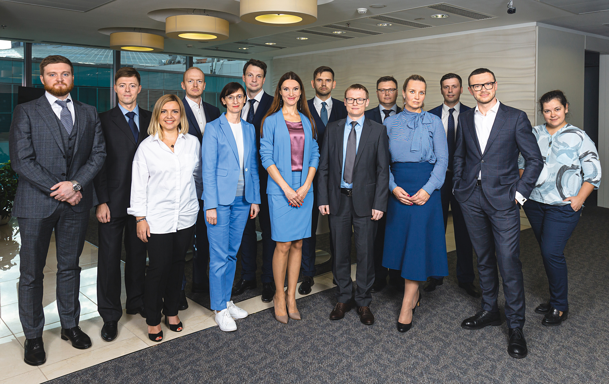
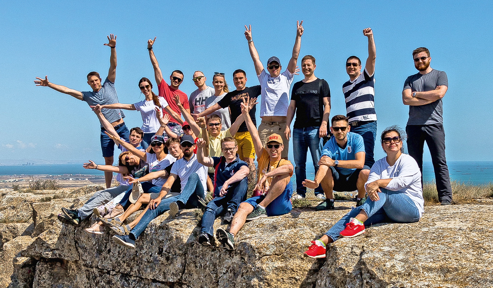

Мы умеем делать невозможное
Объединение с ВТБ24, новая программа ERP 2.0, программа управления затратами, централизация бюджетно-закупочной функции для ИТ, создание площадки для финансовой поддержки регионов на базе Самары и запуск платежной фабрики. И это лишь часть масштабных проектов, реализованных финансовым департаментом за последние полтора года. Как это стало возможным? Секрет – в команде.

Ирина Бакаева
Заместитель руководителя финансового департамента – вице-президент Банка ВТБ:
Внутри команды нужно создавать единое информационное пространство, систему целеполагания, где каждый сотрудник будет видеть задачи коллег и взаимосвязи внутри коллектива. Важна и обратная связь, причем не только позитивная, но и конструктивная, то есть каждый сотрудник должен понимать свои зоны роста
Секрет успеха – в нашей немногочисленной, но хорошо замотивированной команде, где каждый делает то, что важно для банка, работает на общую цель. Высокий темп выдерживают не все. Те люди, которые образовали костяк команды, имеют схожие ценности и взгляды на работу и жизнь. И им нравится менять пространство вокруг себя к лучшему. Для нас сложные задачи – это не только профессиональный вызов, они создают драйв, придают сил, которые позволяют в конечном итоге сделать то, что казалось нереализуемым.
550 дней
За последние полтора года наша команда принимала участие в нескольких масштабных проектах. Большая их часть уже успешно функционирует или находится на завершающей стадии реализации. После объединения ВТБ и ВТБ24 появился сложный ландшафт ИТ-систем в области управления ресурсами, и мы стали основными драйверами по запуску программы ERP 2.0 – новой системы управления ресурсами Банка ВТБ. Фактически за четыре месяца – беспрецедентно короткое время для масштабов объединенного банка – мы спроектировали и запустили новую систему бюджетирования, и сейчас практически «в бою», во время бюджетной кампании, мы продолжаем шлифовать систему и процессы. У команды ушло чуть больше полугода на внедрение новой системы закупок, сейчас идет завершающий этап проекта.
За три-четыре месяца мы должны были запустить площадку для централизованного сопровождения всех финансовых сервисов региональной сети на базе Самары. Мы сделали это! Дальше – масштабирование успеха на головной офис.
Мы инициировали и успешно реализуем программу управления затратами Группы. Эта работа стала частью Стратегии- 2019/2022.
В прошлом году на базе финансового департамента централизовали сервис по поддержке бюджетно-закупочной функции для департамента информационных технологий. Перед нами стояла задача за очень короткий отрезок времени выстроить процессы, собрать новую команду, настроить уже работающих сотрудников на ценности финансового департамента. Проект был признан успешным, и в этом году мы пригласили пойти по пути централизации бюджетно-закупочной функции и другие департаменты.
С нуля была создана функция анализа эффективности проектов банка, запущен режим «единого окна» для ИТ по всем финансовым вопросам, впервые проведен массовый функциональный бенчмаркинг. Есть много других задач, которые департамент реализовал за последние полтора года.
Новые цели
Сегодня мы на пороге очередной масштабной трансформации. Внутри департамента выделены функциональные блоки: бюджетирования и закупок. Задача новых руководителей, сохранив сервисно ориентированный принцип, продолжить улучшать процессы.
Илья Веткин
Начальник управления закупок:
Мы не являемся автономным подразделением, мы полностью интегрированы в банк, и это один из ключевых принципов, который в нашей команде взращивается: свои победы мы считаем победами ВТБ, и победы ВТБ – своими
Качественные сервисы, взаимодействие и эффективность
Мы выстраиваем свою деятельность по принципу клиентоцентричности, создавая систему, центром которой является внутренний заказчик. Наши ключевые приоритеты – качественные сервисы в оптимальные сроки, прозрачное и понятное взаимодействие, высокая экономическая эффективность. Безусловно, работать приходится в условиях заданных требований и ограничений, в том числе законодательных, но данные рамки не сковывают, а скорее стимулируют на поиск креативных и интересных решений нестандартных задач.
Каждый участник нашей команды нацелен на результат, причем не на свой собственный и даже не своего подразделения, а результат внутренних клиентов, а значит, и всего бизнеса ВТБ. Мы не являемся автономным подразделением, мы полностью интегрированы в банк, и это один из ключевых принципов, который в нашей команде взращивается: свои победы мы считаем победами ВТБ, и победы ВТБ – своими.
Один из самых ярких примеров нашей деятельности – взаимодействие с подразделениями, чью работу в части бюджетирования и закупок мы взяли на себя в рамках соглашений о централизации функций. Иными словами, мы начали предоставлять сервис по сопровождению бюджетно-закупочной функции. Мы многому научились, увидели процесс с другой стороны. Ключевая сложность – поиск баланса, а также способность слушать и слышать своих клиентов. Это непростая задача, так как каж-дое подразделение особенное и имеет высокую значимость для банка. Совместно нами была выполнена большая работа. Сделано немало, но не время останавливаться, основная работа и самые яркие победы впереди.
Открытость и готовность к диалогу – одно из главных правил нашей команды, следование которому позволяет нам двигаться дальше, ведь даже получение конструктивной обратной связи является отличным стимулом для того, чтобы становиться лучше.
Мы не боимся интересных и сложных задач, всегда ищем лучшие практики и внедряем их, задаем тренды и становимся примером для подражания.
Наша команда – это сообщество профессионалов, которое стремится создавать необходимые условия для успешной работы наших внутренних клиентов, банка и Группы ВТБ
Роман Антонов
Руководитель службы повышения производственной эффективности:
Наша задача – предоставление и анализ финансовой информации, идентификация возможностей для снижения затрат, постановка целей на будущие периоды
Мы поддерживаем трансформацию с точки зрения финансов
Мы осуществляем расчет моделей, анализируем финансовую информацию, идентифицируем возможности для снижения затрат, формулируем цели на будущие периоды.
Наши предложения мы формируем на основе анализа различных источников информации. Первый – это массивы финансовых данных по банку в части бюджета и фактических расходов. Второй – это бенчмарки. С этого года мы начали их активно использовать, причем в банке есть несколько направлений, откуда мы их получаем. Третий источник информации – это тесная работа во взаимодейст-вии с кураторами инициатив, с которыми мы прорабатываем и подтверждаем все гипотезы и цифры.
Для выполнения поставленных перед нами целей очень важно собрать команду профессионалов, которая возьмет на себя задачи по продвижению изменений, поиску новых вариантов, оценке существующих возможностей, в том числе с учетом имеющегося опыта, лучших практик. В этой связи нам необходимо, чтобы человек, который приходит к нам в команду, не ограничивал себя устоявшимся порядком вещей, а был готов идти на эксперименты, пробовать себя в новых ролях, смотреть на вопросы с разных ракурсов. Ему должно быть комфортно жить и работать в постоянном водовороте изменений.
Одной из наших ключевых задач является повышение производственной эффективности и поддержка процесса трансформации банка с точки зрения финансов. Здесь есть ряд направлений, которые мы курируем. Это большие банковские инициативы с кросс-функциональным характером – централизация и регионализация, управление недвижимостью, переформатирование сети и безбумажный банк. Каждая из них направлена на то, чтобы повысить эффективность управления затратами, получить в стратегической перспективе существенный эффект
Игорь Маринюк
Руководитель службы категорийных закупок управления закупок:
Наша цель – создать лучшее закупочное подразделение на российском рынке. И мы уверенно идем к ней нашей дружной и профессиональной командой
Закупки как сервис
Я пришел на работу в Банк ВТБ в 2014 году, в то время закупочная функция была на начальных стадиях формирования. Наша задача сводилась к контролю и проверке корректности закупочной документации на соответствие внутренним нормативным документам и федеральному законодательству.
Наши предложения мы формируем на основе анализа различных источников информации. Первый – это массивы финансовых данных по банку в части бюджета и фактических расходов. Второй – это бенчмарки. С этого года мы начали их активно использовать, причем в банке есть несколько направлений, откуда мы их получаем. Третий источник информации – это тесная работа во взаимодейст-вии с кураторами инициатив, с которыми мы прорабатываем и подтверждаем все гипотезы и цифры.
Сейчас наша цель – сделать из закупочной функции сервис с максимальным уровнем удовлетворенности внутренних заказчиков. Идея в том, что структурные подразделения должны быть освобождены от непрофильной функции, чтобы коллегам не приходилось изучать весь спектр нормативных документов, инструкции по работе с системами, в которых проходит жизненный цикл закупочная процедура, познавать премудрости закупочной науки (как проводить эффективные переговоры, как разрабатывать модель ценообразования, по каким правилам анализировать рынок и т. п.). Подписание договора с лучшим поставщиком по лучшим ценам и с полным соблюдением федерального законодательства – это забота управления закупок. Мы начали с того, что взяли на себя функцию закупок для департамента информационных технологий. Прошел год, и, безусловно, нам все еще есть что улучшать (и мы не перестаем это делать). Но закупочная функция для департамента информационных технологий (ДИТ) является самой масштабной в банке, и нам удалось выстроить процессы так, чтобы обеспечивать коллег качественными поставщиками и экономить деньги. По этому же принципу мы взяли на себя закупки для департамента маркетинга и рекламы и департамента по работе со СМИ в Сети. Идет пилотный проект для департамента по обеспечению безопасности. Уже полностью сопровождаем закупки департамента стратегии и корпоративного развития.
Пока не все подразделения готовы передать нам функции по закупочной деятельности, у них есть справедливые опасения, но мы уверены, что на практике докажем преимущества централизованного подхода к закупкам.
Успех всей закупочной функции зависит от слаженности и единства каждого члена команды, ведь функция закупок включает в себя информационное сопровождение, формирование и улучшение нормативных документов, внедрение информационных систем, категорийные закупки. Мы очень заботимся о том, чтобы команда состояла из лучших сотрудников. Мы довольно долго подбираем людей, не жалея на это времени. Цель всегда одна – найти «нашего» человека. «Наш» человек – это искренний, порядочный, душевный, дружелюбный, при этом ответственный и клиентоориентированный, безусловный профессио-нал в своем деле.
Наша цель – создать лучшее закупочное подразделение на российском рынке. И мы уверенно идем к ней нашей дружной и профессиональной командой.
Ольга Мишина
Руководитель службы ИТ-закупок управления закупок:
Мы держим слово, следуем договоренностям и всегда готовы к диалогу. Именно такая позиция помогает нам соответствовать ожиданиям внутреннего клиента, усиливать мотивацию поставщиков работать с банком, повышать конкуренцию на рынке и добиваться лучших коммерческих условий
Купить то, что требуется, по лучшей цене
Все мы пользуемся на рабочем месте компьютером, телефоном, принтером – это закупки. Любой ИТ-проект в банке через них проходит. Закупка может быть стандартной, но есть и сложные случаи – например, закупить программно-аппаратный комплекс для обработки данных. Закупщик должен разобраться, что он покупает, вникнуть в технические особенности, изучить аналоги, проанализировать, какие игроки существуют на рынке, какие есть риски, выстроить стратегию переговоров. Перед закупщиком стоит задача купить то, что требуется, и по лучшей цене при соблюдении внутренних регламентов и законодательных ограничений. Для этого он использует весь свой опыт и изучает мнения ИТ-экспертов.
Закупками по направлению ИТ сейчас занимается команда из 25 человек. Она была создана практически с нуля год назад. За это время нам удалось трансформировать процесс ИТ-закупок, заметно улучшить и качество, и сроки. Отдельно хочется отметить, что мы достигли существенной экономии при проведении закупочных процедур и переговоров с поставщиками.
Мы предоставляем сервис нашему внутреннему заказчику – департаменту информационных технологий. Наша основная цель – удовлетворить внутреннего клиента, обеспечив проведение максимально прозрачной сделки в кратчайшие сроки. Мы проводим анализ каждой закупки на предмет возможных рисков и последствий не только в краткосрочной, но и в долгосрочной перспективе, каждый раз пытаемся максимально исключить негативные последствия, которые могут отразиться на коммерческих отношениях с поставщиком по этой закупочной категории.
Взаимодействие с внутренним клиентом – не всегда просто. От нас ожидают выполнения заявки в сжатые сроки. Но мы понимаем, что проведение непрозрачной закупки – это потенциально имиджевые риски для банка и неэффективные затраты, поэтому стремимся максимально детально проработать каждый запрос и выдать качественный результат.
В своей команде мы растим профессионалов, которые заключают сделку, максимально соответствующую ожиданиям клиента и выгодную для банка. Мы хотим создать интеллектуальную команду, которая будет вместе с ИТ-экспертами участвовать в обсуждении критериев оценки и организации закупочной стратегии.
Мы выстраиваем максимально прозрачную коммуникацию как внутри компании, так и вовне. Мы ставим перед собой амбициозные цели по оптимизации сроков закупки и достижению значимого снижения цен даже при работе с единственными контрагентами. Мы держим слово, следуем договоренностям и всегда готовы к диалогу. Именно такая позиция помогает нам соответствовать ожиданиям внутреннего клиента, усиливать мотивацию поставщиков работать с банком, повышать конкуренцию на рынке и добиваться лучших коммерческих условий.
Владимир Широков
Начальник отдела по расчету аллокаций управления бюджетирования:
Мы стремимся к уровню передовой международной практики финансового учета и отчетности и как сервисное подразделение понимаем, что наши данные должны быть понятны и легки для визуального восприятия
Аллокация – дискуссионный и динамический процесс
Аллокация затрат – сложный регулярный процесс с большим количеством участников. В него вовлекаются и поставщики данных, и аналитики, и контролеры; каждый при этом решает свою задачу, выступая то в одной роли, то в другой. Вовлечены, разумеется, и конечные пользователи в банке. Аллокация расходов задействована в формировании сегментной отчетности, бизнес-плана, управленческих данных, на основании которых менеджмент проводит оценку эффективности деятельности как отдельных подразделений, так и банка в целом, а также его дочерних компаний.
Публичная финансовая отчетность всех участников Группы ВТБ формируется ежемесячно, поэтому регулярно и у нас наступает «горячая пора» – производится расчет и согласование с бизнесом результатов аллокации расходов. И хотя результатом напряженной деятельности являются скупые строчки отчетности в разделе «Сегментный анализ», за этими цифрами стоит грандиозная работа. И это достоверная всеобъемлющая информация о том, как сложились расходы каждого банка Группы за отчетный период по бизнес-линиям.
Мы как потребители и поставщики данных аккумулируем и консолидируем финансовую и нефинансовую информацию. Финансовая – это затраты, признанные расходами подразделений. Нефинансовая – это численность сотрудников, занимаемые площади. Эти данные взаимоувязываются, и на выходе после расчета мы получаем разнообразную управленческую информацию: расходы по территориальному признаку; общие расходы конкретной точки продаж; общую стоимость функций; общую стоимость ИТ-системы с учетом объема «железа» (т. е. мы формируем полную стоимость владения этой системой) и т. д.
Мы проводим оценку расходов по банковским проектам и с помощью наших данных подтверждаем или не подтверждаем предполагаемые эффекты. Бывает, что у бизнеса и у нас складываются разные мнения. Аллокация – дискуссионный и динамический процесс.
Мы стремимся к уровню передовой международной практики финансового учета и отчетности и как сервисное подразделение понимаем, что наши данные должны быть понятны и легки для визуального восприятия. Для повышения прозрачности аллокации и ее доступности мы ввели в эксплуатацию систему интерактивной отчетности на базе Qlikview. Теперь все участники процесса могут сразу видеть, как и почему мы получили те или иные результаты. В своей работе мы учитываем как изменения внутри Группы, так и адаптируем лучшие современные подходы к финансам.
Валерия Романова
Руководитель проекта финансового департамента:
Чтобы идти в ногу со временем, мы делаем ставку на стандартизацию и автоматизацию всех рутинных процессов, стремимся повысить производительность функции
Новая роль финансов
Роль финансовой функции в жизни банка за последнее десятилетие существенно изменилась. Ранее акцент делался на качественном исполнении процессов бюджетирования, планирования, аллокации, контроля расходов, значительная часть функций производилась вручную в силу отсутствия автоматизации и низкой производительности ИТ-систем. Соответственно в список требуемых компетенций сотрудников финансовой функции входили скрупулезность, внимательность, аналитический склад ума.
В настоящее время требования к роли финансов в жизнедеятельности банка существенно выше. Это один из главных участников в процессах стратегического планирования, принятия инвестиционных решений, управления производительностью, повышения эффективности проектной деятельности и поиска новых возможностей улучшения результативности организации.
Чтобы идти в ногу со временем, мы делаем ставку на стандартизацию и автоматизацию всех рутинных процессов, стремимся повысить производительность функции. Реализация запущенных инициатив, таких как внедрение ERP-системы, централизация финансовой функции в Самаре и т. д., позволит сместить фокус со сбора и подготовки финансовых данных на их анализ, интерпретацию и формирование инициатив по увеличению результативности деятельности банка. Для этого нам необходимо непрерывно повышать качество данных. Должна возрасти степень доверия к ним, чтобы можно было реально принимать управленческие грамотные решения со стороны тех, кто эти данные будет использовать. В нашей команде появляется все больше людей из разных областей со знанием бизнес-процессов банка, пониманием специфики бизнеса и продуктов банка, способных выйти за пределы традиционных финансовых функций и обеспечить новый импульс развития функции. От сотрудников требуется умение узнать потребности заказчиков, посмотреть в команде критически на задачу, определить наиболее яркие и эффективные инициативы совместно с бизнесом по улучшению, повышению результативности и эффективности.
Мы ставим себе целью предоставлять качественный сервис внутреннему клиенту. Для этого очень важно развивать эффективные коммуникации, быть сплоченной командой как внутри финансов, так и с нашими заказчиками.
Мы стремимся к тому, чтобы быть партнером для бизнес-линий и подразделений поддержки и повышать степень доверия к нашей функции и тем решениям, которые строятся на основе финансовых данных
Владимир Мудров
Руководитель проекта финансового департамента:
Наша цель – добиться полной прозрачности и предсказуемости процесса, сделать так, чтобы внутренний заказчик был максимально доволен
Центры компетенций замкнут на себя потребности подразделений по закупкам и бюджетированию
Перед нами стоит важная задача по централизации в банке двух функций: закупочной и бюджетной. Так сложилось исторически, что сегодня в банке этими функциями занимаются почти все подразделения. Одна из главных сложностей централизации в том, что у каждого департамента есть свои нюансы: у одних таких операций больше тысячи в год, у других всего одна, у третьих ярко выражена сезонность. Отличаются и процессы внутри каждого из подразделений. Отсутствие единообразия делает процессы закупок и бюджетирования неудобными с точки зрения конечного пользователя. Особняком стоит проблема эффективности использования средств: один и тот же товар может приобретаться в разных городах, у разных контрагентов, по разным ценам, что увеличивает расходы.
Недавно мы провели опрос пользователей, которые участвуют в процессе закупок и бюджетирования. Многие высказали мнение, что текущие процессы весьма трудоемки, ими недовольны как заказчики, так и исполнители.
Наша команда вызвалась трансформировать эти процессы в ВТБ. В начале года мы разработали новые подходы к организации бюджетной и закупочной функций. По сути, мы создаем центры компетенций внутри финансового департамента, которые полностью замкнут на себе потребности всех подразделений банка в части закупок и бюджетирования. Коллеги не будут заботиться о том, как им найти, например, деньги на закрытие внеплановой потребности, организовать закупочную процедуру и оплачивать счета. Важно отметить, что планируемые изменения не предполагают исключение диалога с внутренним клиентом (заказчиком) и его влияния, например, на выбор контрагента в рамках закупочной процедуры. На стороне заказчика остаются процессы, связанные с генерацией потребностей. Наша цель – добиться полной прозрачности и предсказуемости процесса, сделать так, чтобы внутренний заказчик был максимально доволен.
Изменить мгновенно всю систему не получится, централизация будет проводиться поэтапно. Порядок внедрения изменений определяет рабочая группа по централизации однородных функций.
Сегодня некоторые подразделения уже передали бюджетно-закупочные функции на сопровождение в финансовый департамент, ряд подразделений передает функции в формате пилотных проектов.
Откладывать эти изменения на будущее нельзя. Мы, если честно, уже сильно задержались с этой трансформацией. Многие компании давным-давно начали двигаться в направлении централизации и регионализации этих функций, ориентируясь на опыт зарубежных коллег. Поэтому нам предстоит пройти этот путь в два раза быстрее.
Дмитрий Ерохин
Директор управления закупок:
Мы (ФД и ДИТ) – поддерживающие подразделения, и нам необходимо эффективно взаимодействовать в команде. Мы должны соответствовать изменениям, происходящим в Банке ВТБ
Создание «единого окна» в закупках
В 2018 году мы завершили большую работу по переводу всех сотрудников, занимающихся закупками в департаменте информационных технологий (ДИТ), в финансовый департамент. Так было создано управление финансовой поддержки ИТ (УФПИТ). Перед нами стояла задача не просто совершить этот перевод, но и улучшить качество услуг для внутренних клиентов. Для успешной реализации этой задачи нужна была слаженная работа всей команды. Каждый сотрудник сыграл значимую роль во время переходного этапа, что позволило нам справиться с поставленной задачей.
Теперь перед нами новая, еще более амбициозная цель: выстроить коммуникации и наладить диалог для предоставления сервиса в предельно короткие сроки. Это наша прямая функция, которую нам предстоит усовершенствовать. Одна из наших основных задач – создание «единого окна» как в проектной деятельности, так и для поддержания текущей работы. Поэтому нам нужно становиться еще более понятными, быстрыми и эффективными.
В настоящее время мы в процессе новой трансформации внутри финансового департамента. УФПИТ упразднен, созданы два совершенно новых подразделения – управление закупками и управление бюджетирования. При этом в связи с тем, что ДИТ является для нас самым крупным внутренним клиентом, в структуре данных управлений выделены конкретные люди, ответственные за взаимодействие именно с ДИТ.
В обновленной структуре наши подразделения совместно с ДИТ должны стать единой командой помощи бизнесу. При этом каждый участник команды должен четко понимать свою роль, осознавать, какой сервис он предоставляет, в какие сроки. Это командная работа, где только совместный труд позволит добиваться высоких результатов. Наши подразделения должны ставить своей задачей удовлетворение запросов конечного потребителя – бизнеса, без эффективной работы которого банк не сможет существовать. Мы (ФД и ДИТ) – поддерживающие подразделения, и нам необходимо эффективно взаимодействовать в команде. Мы должны соответствовать изменениям, происходящим в Банке ВТБ.
Александра Макарова
Руководитель проекта финансового департамента:
Хорошо реализованная система позволяет уменьшить нагрузку на пользователей, высвободить ценное время и направить его на творческие и интеллектуальные задачи, которые не умеют решать системы
Системы создаются людьми и для людей
Перед нами стоит сложная, но очень интересная задача – внедрение новой ERP-системы, обеспечивающей сквозные бизнес-процессы и эффективное взаимодействие между различными подразделениями банка. При выборе конкретных решений мы исходили из потребностей и возможностей множества заказчиков. Выбор правильного решения – ключевой момент, потому что можно потратить много средств на реализацию какой-нибудь крутой промышленной платформы, но она не принесет того эффекта, который могло бы принести более простое, лаконичное и менее дорогостоящее решение.
Любая система обеспечивает выполнение процессов людьми и позволяет их масштабировать на уровень организации любого объема. И здесь остро стоит вопрос о клиентоориентированности. До начала разработки системы мы приходим к заказчику, узнаем потребности, недовольства, ожидания, проводим опросы по замеру удовлетворенности сервисом. Хорошо реализованная система позволяет уменьшить нагрузку на пользователей, высвободить ценное время и направить его на творческие и интеллектуальные задачи, которые не умеют решать системы.
Информационная система должна в первую очередь помогать, а не усложнять работу ее пользователям. Это очень важно, потому что системы создаются людьми и для людей. То есть автоматизация и цифровизация – это, конечно, хорошо, но не должно являться самоцелью. Ни одну самую высокоинтеллектуальную систему нельзя создать без людей. Порядок всегда следующий: люди, процессы, технологии. То есть появление любой системы – это исключительно заслуга тех людей, которые ее выстраивают, разрабатывают, это заслуга команды. И то, насколько они заинтересованы, насколько они дружные и сплоченные, сильно сказывается на качестве системы, которая в итоге рождается.
Ирина Бакаева
Заместитель руководителя финансового департамента – вице-президент Банка ВТБ:
Я поощряю любые здоровые инициативы, нередко они выходят далеко за пределы рабочего пространства. Например, многие члены моей команды участвуют в спортивных марафонах, общероссийских конкурсах, ребята покоряют горные вершины, мы вместе принимаем участие в благотворительных проектах, проводим командообразующие мероприятия! Это очень важно, именно так рождается мощный командный дух, благодаря которому мы можем делать невозможное. И что самое главное, благодаря этой энергии команда достигает побед, люди сами упорно идут к цели и добиваются результатов, которыми можно гордиться

 Андрей Костин
Андрей Костин